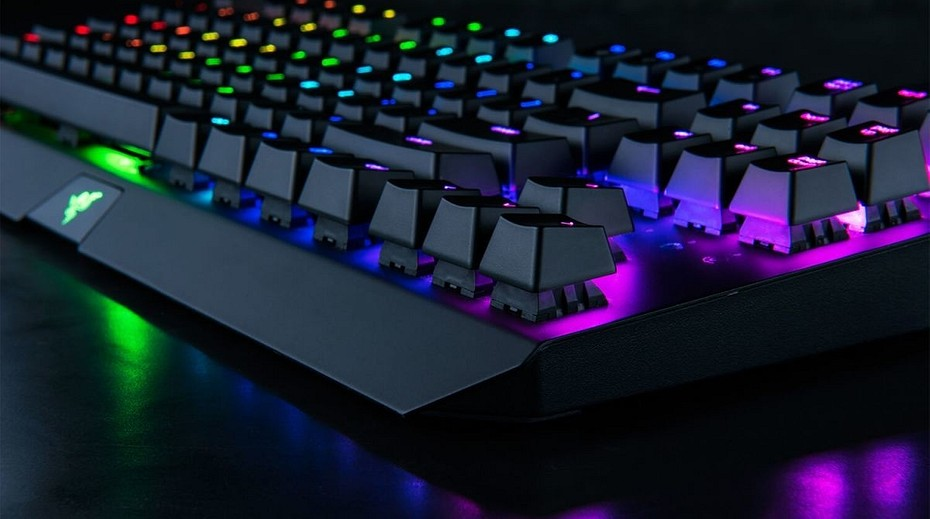

Комп'ютерна клавіатура - це пристрій для введення або виведення інформації. Введення здійснюється через звернення до операцій, що проводяться в процесорі і інструкції на екрані. Виведення відбувається, як правило, на додатково підключаються пристрої, такі як принтери, копіри, сканери, флеш-накопичувачі. Клавіатура має стандартно розташовані 101 або 102 кнопки. В залежності від моделі і виробника можуть бути включені і додаткові, які виконують певні функції.
Будь-яке апаратне забезпечення, в тому числі і розглядається, вимагає програмної підтримки, яка відповідає за обробку всієї інформації. Для клавіатури програмне забезпечення називається драйвером, який у переважній більшості випадків поставляється разом з апаратурою і операційною системою. Саме цей тип драйвера дозволяє користувачеві вибрати розкладку мови і кнопок.